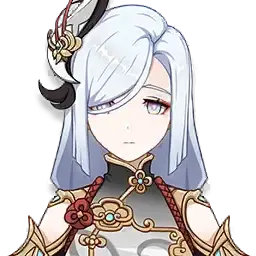
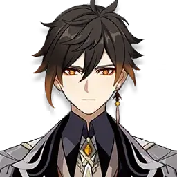
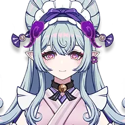

Shenhe
- Shenhe
- Description: Shenhe is a 5 star character who uses a polearm as her weapon. She is a disciple of Cloud Retainer.
- Element: Cryo
- Class: Support
- Level 90 Ascension Materials: Qingxin - 168, Shivada Jade Sliver - 1, Shivada Jade Fragment -9, Shivada Jade Chunk - 9, Shivada Jade Gemstone - 6, Whopperflower Nectar - 18, Shimmering Nectar - 30, Energy Nectar - 36, Dragonheir’s False Fin -46, Mora - 420,000.
- Shenhe Materials: Qingxin can be found in the mountaintops in Liyue.Whopperflower Nectar are dropped by whopperflower bosses and are found in Mondstadt, Liyue, Inazuma, and Enkanomiya. Shimmering Nectar are dropped by level 40+ whopperflower bosses and are found in Mondstadt, Liyue, Inazuma, and Enkanomiya. Energy Nectar Nectar are dropped by level 60+ whopperflower bosses and are found in Mondstadt, Liyue, Inazuma, and Enkanomiya.The Energy and Shimmering Nectar can both be crafted. Dragonheir’ False Fin are dropped by level 30+ Bathsymal Vishap Herd bosses and are located in Enkanomiya.

Zhongli
- Zhongli
- Description: Zhongli is a consultant of the Wangsheng Funeral Parlor and is the Geo Archon.
- Element: Geo
- Class: Support
- Level 90 Ascension Materials: Prithiva Topaz Sliver -1, Prithiva Topaz Fragment - 9, Prithiva Topaz Chunk - 9, Prithiva Topaz Gemstone - 6, Cor Lapis - 168, Slime Condensate -18, Slime Secretions -30, Slime Concentrate - 36, Basalt Pillar - 46, Mora - 420,000.
- Zhongli Materials: Cor Lapiz can be found in the mountains and caves in Liyue. Slime Condensates are dropped by slimes which can be tracked down on the Adventurer Handbook.Slime Secretions are dropped by level 40+ slimes can be tracked down on the Adventurer Handbook. Slime Concentrate are dropped by level 60+ slimes and can be tracked down in the Adventurer Handbook. Slime Secretions and Slime Concentrate can both be crafted too. Basalt Pillar is dropped by a level 30+ Geo Hypostasis boss and can be found in Liyue.

Mizuki
- Mizuki
- Description: Mizuki is a 5 star character who uses Catalyst as her weapon. She is a clinical psychologist in Inazuma.
- Element: Ameno
- Class: Healer
- Level 90 Ascension Materials: Vayuda Turquoise Sliver -1, Vayuda Turquoise Fragment -9, Vayuda Turquoise Chunk -9, Vayuda Turquoise Gemstone -6, Sea Ganoderma -168, Kageuchi Handguard - 30, Famed Handguard - 36, Old Handguard - 18, Talisman of the Enigmatic Land -46, Mora - 420,000.
- Mizuki Materials: Sea Ganoderma can be bought and found by water Inazume.Kageuchi Handguard can be crafted and dropped by a level 40+ Nobushi which is located in Inazuma. Famed Handguard can be crafted and dropped by a level 60+ Nobushi which is located in Inazuma. Old Handguard dropped by a Nobushi which is located in Inazuma. Talismans of the Enigmatic Land are dropped by level 30+ Wayward Hermetic Spiritspeaker boss which can be found in Natlan.
